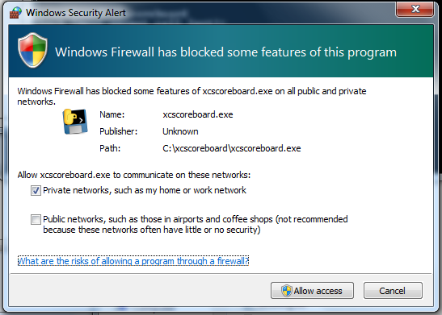

Conduct Race
Conduct race
Assign two laptop computers (one in timing mode and one in bib entry mode connected to the same WIFI hotspot) -- one each to an operator who will record times and the other laptop to an operator who will record bib#'s. Additionally, when manual scoring/timing, I recommend assigning a bib caller who calls out bib numbers of finishers in the order of completion. This assists the timer who will enter the optional “alignment” bibs during timing (which are used for error correction and timing verification).
Note. When launching xcscoreboard in orchestration mode, if windows firewall is enabled, you may receive a popup window as follows. Simply click “Allow access” to acknowledge the popup to allow orchestration mode to continue:

After the app is started on each computer and once they have connected to each other:
- On the timing computer:
- If a scoreboard has been activated (you plan to stream results to the online scoreboard), on the config page, press the "Connect to Activated Scoreboard" button.
- Traverse to the Bibs/Timing sheet, open the timer, and assign it to the group that is about to start running. When the race begins, start the timing clock. Optionally, the timing clock can be started after the race has begun … simply change the start time value and start it when an external timer is synchronized to the start time.
- If manually timing, simply press the enter key while the timer is highlighted (always make sure the timer is the highlighted window) as racers cross the finish line to record times for each runner. Optionally the timing operator can (if convenient and if it won't affect timing accuracy) type in the bib#'s of the finishers (in the bib# entry of the timer) as they cross. Doing this records the entered bib data in the "abib#" (alignment bib) field which is used to help verify that the correct finisher's times aligns with the bib#'s as entered by the bib entry laptop operator.
- If using a chip timing system (requires additional setup to maps chips to bibs), as racers cross, times and bibs will be automatically entered. Bibs entered by the bib operator (by default, but can be overridden) are entered in the abib# field (for verification and backup data).
- The timer operator should monitor that bib#'s entered by the bib entry operator sync up to the timer computer. The timer is responsible for ensuring that the times being entered align with the bib#'s being entered by the bib entry operator (abib#’s help with this task).
- The timer is also responsible for marking any DQ's and for correcting highlighted issues, i.e., if a racer finishes a different race group than assigned, or if there are close calls (if using a timing system).
- After the race is complete, stop and close the timer. If results can be marked and published as official at the time of closing the timer, then confirm in the closure dialog that the race can be marked finished. Note that a race can also be marked as Finished at any future time in the "Groups" page by clicking on the cell associated with the Group in the "Finish Time" column. Note that marking a race as finished publishes the results as "Certified and Official". So if you using and are connected to the online scoreboard, make sure your results are accurate and ready to be certified.
- On the bib entry computer:
- Traverse to the Bibs/Timing sheet. As finishers cross, enter their bib#'s in the order they cross. If the race is large, this may require the bib enter operator to be placed at the end of a chute where racers file through in single file in the order they finished.
- As a convenience, the bib entry operator will notice that race times are synchronized to the bib entry computer.